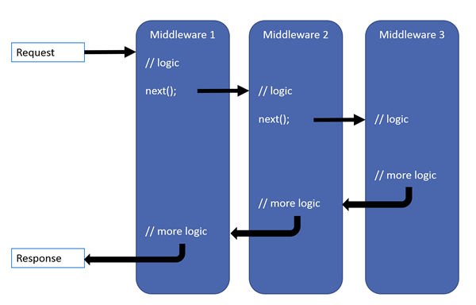

overview
Overview
Middleware is a pipeline of components to handle requests and responses. Each component can:
- Pass the request to the next component;
- Perform work before and after the next component.

(black arrows = thread of execution)
Request Pipeline
Built with request delegates. The delegates handle each HTTP request.
- Request delegates are configured with
Run,Map, andUseextension methods:Useextensions add to the pipeline.Mapextensions branch the pipeline.Runextensions short-circuit the pipeline.
- Can be defined as in-line anonymous method or separate class.
- Each component performs operations on an
HttpContextand either:
a. Invokes the next middleware in the pipeline, or;
b. Terminates the request.
Creating
var builder = WebApplication.CreateBuilder(args);
var app = builder.Build();
// Prefer the app.Use overload that requires passing a context to next: it saves two internal per-request allocations versus its other overload.
app.Use(async (context, next) => // Multiple request delegates are chained with Use
{
// Do work that can write to the Response.
await next.Invoke(); // The next parameter represents the next delegate in the pipeline. If next is not called, the pipeline is short-circuited.
// Do logging or other work that doesn't write to the Response.
});
// Run delegates do not receive a next parameter. The first Run delegate is always terminal. Any Use or Run delegates added after this one are not called:
app.Run(async context =>
{
await context.Response.WriteAsync("Hello from 2nd delegate.");
});
app.Run();
Middleware Sequencing
For ASP.NET MVC & Razor Pages apps:

If app.UseRouting() is not used, the Routing middleware runs at the beginning of the pipeline. If used, it runs as per the above diagram.
The order that middleware components are added in Program.cs define the order in which they are invoked on requests and the reverse order for the response. The order is critical. This is the recommended order:
var builder = WebApplication.CreateBuilder(args);
// Add services to the container.
var connectionString = builder.Configuration.GetConnectionString("DefaultConnection");
builder.Services.AddDbContext<ApplicationDbContext>(options => options.UseSqlServer(connectionString));
builder.Services.AddDatabaseDeveloperPageExceptionFilter();
builder.Services.AddDefaultIdentity<IdentityUser>(options => options.SignIn.RequireConfirmedAccount = true)
.AddEntityFrameworkStores<ApplicationDbContext>();
builder.Services.AddRazorPages();
var app = builder.Build();
// Configure the HTTP request pipeline.
if (app.Environment.IsDevelopment())
{
app.UseMigrationsEndPoint();
}
else
{
app.UseExceptionHandler("/Error");
app.UseHsts();
}
app.UseHttpsRedirection();
app.UseStaticFiles();
// app.UseCookiePolicy();
app.UseRouting();
// app.UseRequestLocalization();
// app.UseCors();
app.UseAuthentication();
app.UseAuthorization();
// app.UseSession();
// app.UseResponseCompression(); // Compress the response…
// app.UseResponseCaching(); // …and cache it to reduce CPU usage.
// app.UseStaticFiles(); // Since Compression is called earlier in the pipeline, static files are also compressed.
app.MapRazorPages();
app.MapControllerRoute(
name: "default",
pattern: "{controller=Home}/{action=Index}/{id?}");
app.Run();
Other Middleware Components
These middleware extension methods are exposed on WebApplicationBuilder:
-
Exception/error handling:
- When app runs in Development environment:
UseDeveloperExceptionPage— reports app runtime errorsUseDatabaseErrorPage— reports database runtime errors
- When app runs in Production environment:
UseExceptionHandler— catches exceptions thrown in middlewares that follow it in the pipeline
- When app runs in Development environment:
-
UseHsts— Adds Strict-Transport-Security header. -
UseHttpsRedirection— HTTP requests to HTTPS -
UseStaticFiles— return static files and short-circuit further request processing a. Any files served are publicly available. b. The order of UseCors and UseStaticFiles depends on the app. -
UseCookiePolicy— conforms app to EU GDPR regulations -
UseRouting— to route requests -
UseAuthentication— attempt to authenticate the user before they can access secure resources -
UseAuthorization— authorize a user to access secure resources. -
UseSession— establish and maintain session state (if used, call after cookie policy and before MVC middleware) -
UseEndpointswithMapRazorPages— add Razor Pages endpoints to the request pipeline.
Branching the Pipeline
Use Map extension method. Map branches the pipeline based on matches of the given request path. If the request path starts with the given path, the branch is executed:
var builder = WebApplication.CreateBuilder(args);
var app = builder.Build();
// Called if request starts with /map1:
app.Map("/map1", HandleMapTest1);
// Called if request starts with /map2:
app.Map("/map2", HandleMapTest2);
// Called if request starts with anything else:
app.Run(async context => { await context.Response.WriteAsync("Hello from non-Map delegate.")) };
app.Run();
static void HandleMapTest1(IApplicationBuilder app)
{
app.Run(async context => { await context.Response.WriteAsync("Map Test 1")) };
}
static void HandleMapTest2(IApplicationBuilder app)
{
app.Run(async context => { await context.Response.WriteAsync("Map Test 2")) };
}
Notes on Map
- When
Mapis used, matched path segments are removed fromHttpRequest.Pathand append toHttpRequest.PathBasefor each request. Mapsupports nesting.Mapcan match multiple segments at once.
MapWhen
MapWhen branches the pipeline based on the result of a given predicate of type Func<HttpContext, bool>:
app.MapWhen(context => context.Request.Query.ContainsKey("branch"), HandleBranch);
UseWhen
UseWhen branches the pipeline based on the result of a given predicate of type Func<HttpContext, bool>. The branch is rejoined to the main pipeline if:
- It does not short-circuit
- It does not contain terminal middleware
app.UseWhen(context => context.Request.Query.ContainsKey("branch"), appBuilder => HandleBranchAndRejoin(appBuilder));